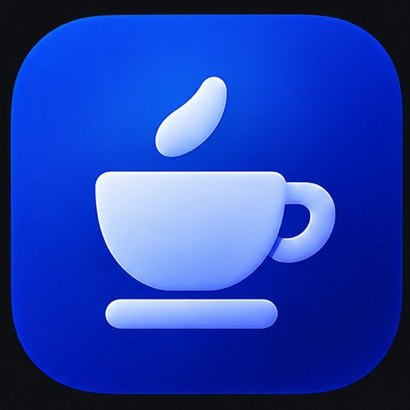

The Cruise Control guide
A clear goal.
A steady workflow.

Bring your HeyClicky and VS Code tasks into one dashboard. Define the finish line, review progress, and choose what happens next.
Get started on Mac
- Download the installer for macOS 14 or later and open it.
- Grant Accessibility in System Settings → Privacy & Security. Optional Screen Recording enables visual detection of HeyClicky notch prompts.
- Open the Cruise notch dropdown and Settings. Start in Manual, add a task goal, and choose the automation options you want.
The installer places Cruise Control in /Applications and registers a login agent. Packages are currently unsigned and not notarized; review any macOS warning rather than disabling system protections.
Your pace, three modes
Manual leaves HeyClicky drive requests to you. Rest area answers “Not now” and pauses Done-based sending. Cruise answers “Go ahead” / “Let HeyClicky drive” when HeyClicky driving is enabled. Optional system-dialog handling also responds to macOS control requests that name HeyClicky.
Drive approvals, task follow-ups and VS Code options have separate controls. For example, you can review tasks and use per-task Auto-bump in Manual without enabling auto-drive.
Timeout and “Didn't finish” cards can be retried on the matching task in Cruise. Tasks marked Stopped or Stopped by you remain paused until you resume them.
One workspace for your agent tasks
Open Settings → Tasks or the task shortcut in the notch dropdown. HeyClicky jobs and VS Code sessions have their own sections, with shared controls for Done, review and follow-ups.
Organize by project
View all tasks individually or group them into project cards. Search, filter and sort by status, priority, saved goal and opt-ins. Local Ollama can suggest projects from thread-linked chats, repository links and paths; correct a project name yourself or leave it unspecified. Set High, Normal or Low priority at project level, with per-task overrides.
Define Done, then keep moving
- Confirm the workspace. Review the suggested project folder or choose the correct one.
- Define Done. Save a task-specific goal using the editor, Markdown preview or document import.
- Review progress. Compare the latest response with your goal. Ollama highlights supporting evidence and remaining work; Examine/Review holds its assessment for you to read.
- Set the workflow. Complete Build, branches & finishing: delivery, branch organization, selected work branch and whether to merge into it. HeyClicky also has a build-location choice; VS Code uses its confirmed workspace. “Choose later” keeps drafting and sending on hold.
- Respond. Generate and send a reviewed draft yourself, or enable Auto-bump on that task to review fresh reports and send the next eligible follow-up automatically.
Tasks with saved Done criteria are checked automatically; VS Code checkups run on launch and every five minutes. Auto-bump is a separate per-task opt-in with configurable round limits. It works in Manual or Cruise and pauses in Rest. A completed assessment shows the report’s evidence for your final review.
Task continuation settings also let you choose whether to continue after time, credit or message limits, with per-task overrides. Explicit user decisions stay held for your input.
Background review, without auto-drive
Enable independent task review to let local Ollama assess opted-in tasks while drive and approval automation are off. Review-only delivery keeps drafts for you. Chat-only delivery uses the app’s chat interface; sending still requires per-task Auto-bump and a complete workflow.
Follow-ups stay linked to the exact task, goal and current report. Cruise checks the matching transcript for delivery, keeps uncertain sends pending, and avoids sending the same follow-up twice. Activity shows delivery status; set-aside messages live in Diagnostics for seven days and are not resent from there.
Task identity and delivery details
HeyClicky tasks use stable job IDs joined to their thread history. Ambiguous names, an existing composer draft, a changed report or a stopped task hold delivery. Cruise reads local HeyClicky records and sends through the visible interface, not a private messaging API. Legacy generic stall, relaunch and interruption nudges are not sent; follow-ups use saved Done criteria and explicit task settings.
Project priorities order Cruise’s review queue. Build, branch and finishing preferences are included in the agent’s instructions; the agent performs the project work. An assessment evaluates the response against your criteria, while final acceptance stays with you.
Local intelligence with Ollama
Ollama powers project suggestions, task assessments, follow-up drafts and optional VS Code approval reviews. In Settings → Ollama, check service health, open the official installer, start Ollama, download a model and retry setup.
The notch status icon opens Ollama settings when attention is needed. The default endpoint is local to your Mac. Ollama and its models install separately, so you choose the runtime, model and download size. If a review cannot run, Cruise keeps the request or draft waiting and shows its status.
VS Code, on your terms
Configure these options in Settings → Automation → VS Code. Approval and model automation start off; approvals operate in Cruise mode.
- Tool approvals: review requests with Ollama before Allow Once. Multiple windows and approval carousels are handled individually, including requests displayed as Allow All.
- File edits: separately opt into approving Write/Create requests when VS Code exposes only file metadata rather than a full diff.
- Pylance and other providers: choose whether Cruise may approve tool permissions, including session grants. Session grants cover later calls in that session; permanent and workspace-wide tool grants stay with you.
- Fetch URL: choose Review each URL with Ollama, Allow all URL fetches, or Leave URL fetches for me.
- Task follow-ups: save Done and Auto-bump settings per chat across open windows. Cruise restores the previous chat after reading; drafts and active work hold sending.
- Model preference: prefer the configured economy model, monitor progress, and suggest escalation after repeated failures. Switching to a pricier model asks for confirmation.
- Waiting-session alerts: show a notice when a session needs your input, with an optional gentle sound.
- Usage cutoff: pause automation at your configured usage threshold, using the usage information VS Code exposes. This is a workflow guard, not a billing cap.
Rejected or unreadable approvals stay pending with a status in Activity. Turning off tool permission approvals stops new grants; existing permissions are managed in VS Code.
Know where the space goes
Settings → Storage inventories HeyClicky support data, task caches and Agent workspaces. Search by path or task, filter by category, and sort by size, age or name. Unavailable locations are marked so you can see which totals are incomplete.
Scanning is read-only. For cleanup, confirm deletion of an exact agent-thread build folder or a recognized disposable .build / node_modules subfolder in a workspace. Cruise preserves workspace source, shared HeyClicky history, journals and transcripts; deleted build outputs and dependencies can be regenerated.
A dashboard that feels like yours
Choose the app’s blue, green, red or yellow color theme. The gauge marks Cruise; the coffee cup marks Rest. Position the notch pill on either side, hide it when you want, or show it only with HeyClicky in Manual and Rest. Cruise mode keeps the controls available even when HeyClicky is closed.
When Cruise selects a chat or sends input, a blue screen-edge glow and banner announce control. Automatic VS Code chat switches give 1.5 seconds’ notice and defer if you start typing. Reading the already selected chat stays quiet.
Settings also provides independent HeyClicky and VS Code audio controls. This guide and the landing page have their own four accent choices and System, Light or Dark appearance, saved in your browser.
Taking a break? Open Play Pride Pong… from the app menu for a quick game.
Stay current
The Updates tab checks public Cruise Control releases and offers available downloads. Keep HeyClicky updated is a separate option that handles its update-and-relaunch prompt. Saved task settings and delivery state persist across restarts.
For maintainers, the separate Publisher console builds previews and owner-reviewed GitHub draft releases.
A few automation essentials
Auto-approval lets agents act without asking each time, including changing files, accessing data and using paid services. Start in Manual, keep backups, and enable only the controls you want. Supervise sensitive or irreversible work.
Ollama reviews and usage guards help manage the workflow; they are not a security sandbox or a spending limit. Persistent app permissions remain until you revoke them in macOS or VS Code.
How to pause or quitPause, quit or uninstall
- Pause driving: select Manual. Use Rest to decline HeyClicky drive requests and pause Done-based sending.
- Pause task work: disable independent review and task Auto-bump in Tasks. Review the separate VS Code and HeyClicky-update switches as needed.
- Stop Cruise entirely: choose Quit in the dropdown or press Cmd+Q. This also unloads its restart service for the current login session. Hiding the notch or closing Settings leaves Cruise running.
- Stop work already underway: stop that agent in HeyClicky or VS Code.
To remove the app and login agent from a source checkout:
./scripts/build-app.sh --uninstallSaved configuration remains in ~/Library/Application Support/CruiseControl/.
Your Mac, your settings
Accessibility reads app controls and conversation text and can press buttons. Optional Screen Recording supports visual prompt detection. Settings, task history, delivery state and activity logs are saved locally.
Task text and tool requests go to your configured Ollama endpoint, local by default. A remote endpoint sends that content to the selected service. Cruise does not automatically attach screenshots to chat replies.
The app checks public update feeds. These pages use system fonts, store appearance preferences locally, and request public GitHub release information and download counts. Redact task text, commands and credentials before sharing logs.
Cruise Control is independent open-source software, not affiliated with HeyClicky, VS Code or GitHub.
When something needs attention
- A prompt stays open: check the relevant automation switch, Accessibility permission, Ollama health and the approval status in Activity.
- A follow-up is held: check the task’s Done, confirmed folder, workflow choices, Auto-bump, round limit and latest delivery status. Resume a stopped task in its own app.
- A review needs a model: open Ollama settings, start the service, choose an installed model and retry.
- Repeated work: pause Auto-bump, read the latest report and refine the goal or give the agent the missing decision.
- Storage totals look incomplete: inspect the unavailable roots and confirm access to the configured Agent folder.
Use Settings → Activity → Open activity log for details. Configuration: ~/Library/Application Support/CruiseControl/config.json. Log: ~/Library/Logs/CruiseControl.log.
Read-only source diagnostics
swift build
.build/debug/CruiseControl --scanBuild, contribute, make it yours
With Xcode Command Line Tools installed, run from a checkout:
swift test
./scripts/run-local.shThe local testing app uses a separate identity and settings; your installed app stays unchanged. For an installable bundle, use ./scripts/build-app.sh. Add --install to replace a user-owned installation and register its login agent; use the packaged installer for administrator-owned apps.
Browse the source, read the contribution guide, or report an issue with your app/macOS version and a redacted diagnostic excerpt.